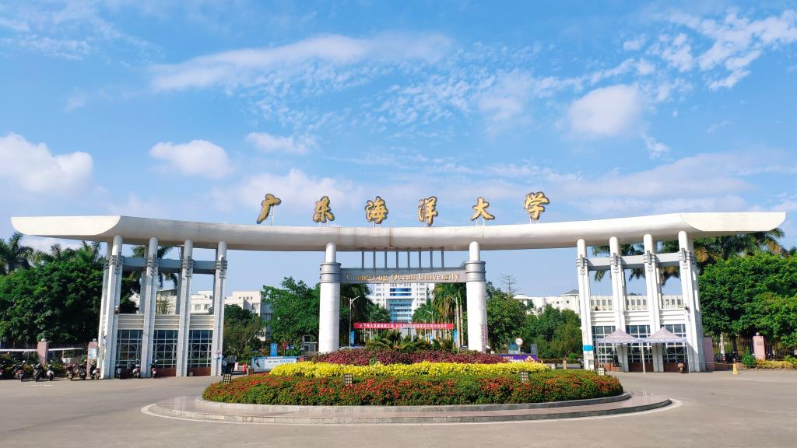

大学分析
中国海洋大学
“海纳百川，取则行远”，这八个字是中国海洋大学的校训，蕴含着深邃的哲理与壮阔的理想。“海纳百川”意指大海能够容纳万千河流，象征着宽广的气度与胸怀;“取则行远”则传达了海大人志存高远的追求与脚踏实地的精神。
中国海洋大学（Ocean University of
China）位于山东省青岛市，是中华人民共和国教育部直属的综合性全国重点大学，位列国家“双一流”“985工程”“211工程”，在学术研究和教育资源上坐拥着得天独厚的优势。
学校创建于1924年，历经私立青岛大学、国立青岛大学、国立山东大学、山东大学等办学时期，于1959年发展成为山东海洋学院，1960年被中共中央确定为全国13所重点综合大学之一，1988年更名为青岛海洋大学，2002年更名为中国海洋大学。2017年入选国家“世界一流大学建设高校”。
作为一所综合性大学，中国海洋大学开设的学科门类有工学、理学、管理学、文学等等，各学科总共开设有74门专业。其中“海洋”类专业共有9门，在专业总数中占比为12%，包括海洋科学、海洋技术、海洋资源与环境、船舶与海洋工程、海洋资源开发技术、海洋渔业科学与技术、航海技术、轮机工程、船舶电子电气工程、海洋信息工程、港口航道与海岸工程、水产养殖。
中国海洋大学一直以来都以海洋学科为核心和特色，打造了一系列特色鲜明且实力雄厚的海洋类专业。以下为统计自软科中国大学2021至2024年“海洋”类专业排名数据，并制成专业等级变化折线图，其中纵轴数字1代表专业评级为C及C以下、数字2代表专业评级为B、数字3代表专业评级为B+、数字4代表专业评级为A、数字5代表专业评级为A+。该评价体系由学校条件、学科支撑、专业生源、专业就业、专业条件5个指标类别组成。
海洋科学类专业是中国海洋大学的特色专业和王牌专业。据软科中国大学专业排名数据，2021年至2024年，海洋科学、海洋技术、海洋资源与环境这三门专业等级均为A+，凸显了中国海洋大学在海洋科学类专业的过硬实力。
在海洋工程类专业中，船舶与海洋工程的评分等级在2023年由B提升至B+，海洋资源开发技术在2021年至2024年的评分等级均保持在A+。
在其他类海洋专业中，海洋渔业科学与技术、水产养殖的评分等级均保持在A+，港口航道与海岸工程的评分等级保持在B+，轮机工程的评分等级则在2023年由B提升至B+，呈现出较好的发展趋势。
总体来看，中国海洋大学的“海洋”类专业都拥有较高的评分等级，评分等级较高的专业始终保持着优异的表现，评分等级较低的专业也在逐渐发展，呈现出评分等级上升的趋势。
中国海洋大学的海洋科学专业是其特色与王牌，隶属于海洋与大气学院，属双一流学科中的A+学科，拥有80余名专任教师，包括3位中国科学院院士及众多具有海外交流经验的资深教师。专业研究方向主要为物理海洋学，探索海洋力场及机械运动的时空变化，研究海洋中的物质与能量交换。
教师团队重视教学研究与科研实践，主持多项国家级、省部级教学研究项目，取得丰硕成果。强大的师资与优越的科研条件使中国海洋大学的海洋科学专业成为我国海洋人才的摇篮。
在学科建设方面，海洋科学专业秉持国际一流办学定位，坚持“强化特色、巩固发展；开拓进取，辐射带动”的理念，瞄准国内外海洋科学前沿，以国家与社会需求为导向，对我国海洋科学专业的建设和改革起到了示范作用。经过多年的积累，中国海洋大学海洋科学专业已成为国家重点学科，首批“理科基础科学研究和教学人才培养基地”，亦为国务院学位委员会首批批准的博士点，以强大的实力引领着国内海洋科学的发展。
强大的师资力量是学科发展和培育人才的有力支撑。在中国海洋大学的师资团队中，为“海洋”学科授课的教授统共有一百余人，副教授约有两百人。
在学术论文方面，中国海洋大学拥有庞大的论文数量。在中国海洋大学发表的85949篇论文中，“海洋”类学科论文数量为17959篇，占发表论文总数的20.89%。其中海洋学论文数量为9688篇，占海洋学科论文总量的53.95%；水产和渔业的论文数量为7771篇，占海洋学科论文总量的43.27%；船舶工业论文数量为500篇，占海洋学科论文总量的2.78%。丰富的学术论文不仅反映了中国海洋大学在海洋科学研究上的深度和广度，也进一步提升了学校在学术研究领域的声誉。
国家自然科学基金、国家重点研发计划、国家科技支撑计划这三项国家科研项目对于贯彻科技强国战略具有重要意义。分析中国海洋大学的科研项目数量，对于反映其海洋学科发展趋势具有重要的参考价值。
国家自然科学基金重大研究计划是国家自然基金中层次最高、资助力度最大、权威性最强的项目类别，主要围绕国家重大战略需求和科学前沿。该基金在推动中国自然科学基础研究、促进基础学科建设、发现和培养优秀科技人才方面取得了巨大成绩。中国海洋大学参与的国家自然科学基金项目总数为14346项，其中海洋学相关项目有3330项，占比为23.21%；水产和渔业相关项目有1452项，占比为10.12%；船舶工业相关项目有150项，占比为1.05%。
国家重点研发计划是我国最高级别的研发项目，聚焦重大社会公益性研究、产业核心竞争力、国家安全的战略性基础研究和关键技术，为经济和社会发展提供支撑和引领。中国海洋大学参与的国家重点研发计划总数为1466项，其中海洋学相关项目有418项，占比为28.51%；水产和渔业相关项目有249项，占比为16.98%；船舶工业相关项目有36项，占比为2.46%。
国家科技支撑计划旨在解决经济社会发展的重大科技问题，重点关注国家战略需求的基础研究、重大科学研究、国家安全相关高技术领域，以及引领未来新兴产业的发展。中国海洋大学参与的国家科技支撑计划项目总数为1125项，其中与海洋学相关的项目为75项，占项目总数的6.67%，与水产和渔业相关的项目有410项，占项目总数的36.44%。
由此观之，中国海洋大学对于发展海洋学科持高度重视的态度，并一直致力于参与国家重点科研项目，利用自身在海洋学科领域的优势来为国家科研事业的研究与发展贡献力量。
未来，中国海洋大学海洋类学科的学术研究应更加注重跨学科融合和创新。在海洋环境保护、资源开发和气候变化等领域，学校要继续加强基础研究和应用研究，为解决全球性问题提供科学依据和解决方案。

在人才培养策略上，中国海洋大学应继续保持与国外高校的交流合作，吸收国外的先进研究成果，以提升学生的国际化水平。同时，加强与科研机构和企业的合作，推进学科研究项目，培养高素质的复合型海洋科学人才。
上海海洋大学
“勤朴忠实”作为上海海洋大学的校训，“勤”为勤奋敬业，即学习勤奋，工作勤勉，反对消极怠惰；“朴”为质朴大方，即做人求真，多做少说，反对奢华浪费；“忠”为爱国荣校，即忠于祖国，热爱母校，反对薄情寡义；“实”为求真务实，即重视实践，讲求实效，反对弄虚作假。
上海海洋大学（Shanghai Ocean
University）是上海市人民政府与国家海洋局、农业农村部共建高校，属于国家首批“双一流”建设高校，是一所历史悠久、特色鲜明的高水平大学。
学校前身是张謇、黄炎培创建于1912年的江苏省立水产学校，历经国立中央大学农学院水产学校、国立四川水产职业学校、上海市立吴淞水产专科学校、上海水产专科学校等办学时期，1952年升格为中国第一所本科水产高校——上海水产学院，1985年更名为上海水产大学，2008年更名为上海海洋大学，江泽民同志题写校名。2017年，入选国家“世界一流学科建设高校”。2022年，入选第二轮“双一流”建设高校及建设学科名单。
上海海洋大学以海洋农、理、工、文等多学科交融发展为特色，在海洋科学研究、水产学科评估、国际交流与合作现等方面取得重大突破，为国家和区域的经济社会发展做出了重要贡献。上海海洋大学共有12个学院（部），本科专业44个，其中“海洋”类专业有5门，占专业总数比值的11%，包括海洋科学、海洋技术、海洋资源与环境、海洋渔业科学与技术、水产养殖。
上海海洋大学拥有的“海洋”类专业数量相对其他几所大学而言较少，但从软科专业排名中依然可以看出上海海洋大学拥有较强的海洋学科实力。
据软科中国大学专业排名数据，在海洋科学类专业中，海洋资源与环境在2021年和2022年被评为B，在2023年和2024年被评为B+，从上升的排名可以看出该专业呈现良好的发展趋势。上海海洋大学的海洋技术专业评级从2021至2024年均为B+，位于中上层水平。海洋科学专业从2021年至2024年均被评为B或以下，尚有很大的发展空间。
在其他类海洋专业中，水产养殖和海洋渔业科学与技术是上海海洋大学的强势专业，从2021年至2024年，海洋渔业科学与技术始终保持在A+水平，水产养殖在2022年被评为A，其余几年均保持在A+。
总体来看，在海洋类学科中，上海海洋大学既拥有实力强劲的专业，如水产养殖、海洋渔业科学与技术，也拥有发展较为薄弱的专业，例如海洋科学，这些强势专业常年保持在A+水平，薄弱专业也呈现发展趋势。
上海海洋大学主攻水产方向，其水产养殖专业具有悠久的办学历史和强大的教学实力，入围双一流学科和国家特色专业。作为上海海洋大学特色专业和王牌专业，水产养殖专业在第四轮学科评估中获得A+，在全国范围内享有很高的声誉。
上海海洋大学的水产养殖专业于1952年成立，是国内最早设立的水产养殖本科专业。2009年，该校的水产养殖学专业被评为国家特色专业，列入上海市教委第三期教学高地和上海市085内涵建设试点专业。2013年成为国内高校中唯一入选国家专业综合改革试点的水产养殖学专业。
作为我国水产人才的摇篮，上海海洋大学的水产养殖专业致力于培养适应科技进步和社会发展需求的高素质人才。近20年来，累计为国家培养了1806名高级专业技术人才。
上海海洋大学拥有强大且优秀的师资队伍，其中为“海洋”学科授课的教授约有90人，副教授有120余人，雄厚的师资力量为上海海洋大学的海洋学科发展保驾护航。
上海海洋大学发表的论文总量多达35137篇，其中“海洋”类学科论文有17683篇，占论文总数量的50.32%。从海洋类论文的占比即可看出，上海海洋大学在海洋类学术研究领域的专业性。在17683篇海洋类学科论文中，海洋学相关论文数量为1626篇，占比为9.20%；船舶工业相关论文为297篇，占比为1.68%；与水产和渔业相关的论文数量最多，共有15759篇，占比为89.12%，凸显了上海海洋大学在水产和渔业领域的精湛学术水平。
在上海海洋大学参与的这三项国家重点科研计划中，国家自然科学基金的项目总数是最多的，一共有5333项，其中海洋学领域的科研项目有292项，占总项目数量的5.48%；船舶工业领域的科研项目有57项，占总项目数量的1.07%；水产和渔业领域的科研项目有2634篇，占比为49.39%，是上海海洋大学众多科研领域中项目数量最多、占比最大的一个领域。
在国家重点研发计划领域，上海海洋大学参与的国家重点研发计划项目总数为2027项，其中与船舶工业、海洋学、水产（渔业）相关的科研项目分别有23、115、1114项，占比分别为1.13%、5.67%、54.96%，与水产和渔业相关的科研项目依然是数量最多且占比最大的一类。
相对于另外两项国家重点科研计划而言，上海海洋大学参与的国家科技支撑计划项目数量较少，一共有1319项。其中与水产和渔业相关的科研项目数量为814项，占比超60%，与海洋学相关的科研项目数量仅29项，仅占2.20%。
由此观之，上海海洋大学参与的科研项目绝大部分属于水产和渔业领域，远远超过与海洋学和船舶工业相关的科研项目数量。上海海洋大学参与了许多国家重点科研项目，这不仅提升了该校在海洋学科方面的科研水平和综合实力，同时也为我国的涉海领域，特别是水产养殖和海洋渔业的发展做出了重大贡献。
上海海洋大学不仅致力于国内科研事业，还积极与国外展开科研合作。2002年经国家教育部批准，学校与澳大利亚塔斯马尼亚大学合作办学，共享优质教育资源，培养高素质国际化人才。同时，学校还与东京海洋大学和韩国海洋大学合作，推出双学位暑期学校和教授研讨会等项目。上海海洋大学积极推进国际教育教学评估和认证，遵循国际标准培养人才，提升国际影响力。目前，已与五大洲94所高校和研究机构建立了长期合作关系。
上海海洋大学在水产养殖领域具有显著的优势和实力，在多年的不断发展中，上海海洋大学已经在水产养殖领域具备了深厚的研究基础和丰富的实践经验。从当前的发展趋势来看，预计上海海洋大学将继续发挥其水产养殖专业的引领作用，在该领域持续领跑，带动我国水产养殖学的发展。此外，上海海洋大学还可以进一步推动学科交叉融合，在保持优势学科持续发力的基础上带动薄弱学科的发展壮大。

未来，上海海洋大学将不断加强与世界高水平大学和学术机构的实质性合作，联合开展人才培养和科研攻关，加强国际协同创新。相信上海海洋大学将在与国内外机构的交流合作中日益发展壮大，不断提升国际化程度和水平，努力发展成为世界一流特色大学。
广东海洋大学
“广学明德，海纳厚为”，是以广东海洋大学的简称“广海”两字为句头的校训。“广学”即：广泛学习、广播学问、扩大学校影响力；“明德”指认同、践行和彰显美德，体现以德为立校之本、以德为立人之本；“海纳”，广泛采纳；“厚为”，既有重视行为、勤动手之意，提倡实干精神，培养“三能”应用型人才，也有厚实的作为、大有作为之意，通过厚实的作为来提升社会地位和影响力。
广东海洋大学（Guangdong Ocean
University）坐落于广东省湛江市，是中华人民共和国自然资源部与广东省人民政府共建的省属重点建设大学、广东省高水平大学重点学科建设高校、粤港澳高校联盟成员，入选卓越农林人才教育培养计划，是教育部本科教学水平评估优秀院校。
学校的前身是创建于1935年的广东省立高级水产职业学校。1997年1月10日，湛江水产学院和湛江农业专科学校合并组建湛江海洋大学，1998年6月，经国务院学位委员会批准，学校成为硕士学位授予单位。2001年12月，全国重点中专湛江气象学校并入。2005年6月15日，经教育部批准，湛江海洋大学更名为广东海洋大学。


身为综合性海洋大学，广东海洋大学开设的专业有“水产”“海洋科学”“食品科学与工程”“船舶与海洋工程”“作物学”等等，各学科总共开设有85门专业。其中“海洋”类专业共有10门，在专业总数中占比为12%，包括海洋科学、海洋技术、海洋资源与环境、船舶与海洋工程、海洋渔业科学与技术、航海技术、轮机工程、船舶电子电气工程、港口航道与海岸工程、水产养殖。
作为一所以海洋为特色的高校，广东海洋大学在海洋科学、海洋技术、海洋资源与环境等专业领域具备较强的科研实力和教学水平。
据软科中国大学专业排名数据，2021年至2024年，海洋科学专业等级均为C及C以下，海洋技术专业等级均为B，海洋资源与环境专业等级在2023年由C及C以下提升到B，呈现出较好的发展趋势。
在海洋工程类专业中，船舶与海洋工程的评分等级在2024年由C及C以下提升至B，较往年有良好的发展。
在其他类海洋专业中，海洋渔业科学与技术和船舶电子电气工程的评分等级呈现上下起伏变化，在2024年等级均为C及C以下，港口航道与海岸工程评分等级均保持在C及C以下，航海技术的评分等级在2022年由C及C以下提升至B，轮机工程的评分等级在2024年由C及C以下提升至B，水产养殖等级则在2023年由B提升至B+。
总体来看，广东海洋大学发展潜力大，这些专业在全国范围内处于中上水平，有较大的提升空间。通过进一步的资源投入、师资力量加强和科研水平提升，这些专业有潜力在未来取得更高的排名。
广东海洋大学中的水产养殖是其国家级特色专业，本专业是广东省一级学科重点专业、一级学科博士学位授权点；2015年被遴选为广东省高水平大学重点建设学科。
学校周边拥有丰富的海洋资源和发达的水产养殖业，为该专业的发展提供了良好的环境和资源支持；教学内容涵盖水产养殖基础理论、现代水产养殖技术、水产养殖管理与规划、水产资源保护与可持续利用等方面；学校积极开展国际合作与交流，与国际知名大学和科研机构开展联合研究项目，推动水产养殖领域的国际化发展，例如2022年国际交流与合作处处长陈进军教授率部门工作人员一行4人赴水产学院，就广东海洋大学——卡帕萨·马卡萨大学（赞比亚）水产养殖产业联合研究中心建设项目开展调研。
广东海洋大学的水产养殖专业以其丰富的教学科研资源、优秀的师资队伍和较高的学术影响力，为学生提供了广阔的发展空间和优越的就业前景，是国内外学生学习水产养殖的优选之地。
广东海洋大学的师资力量较为雄厚，在其的师资团队中，为“海洋”学科授课的教授有51人，副教授有80人。
广东海洋大学共有论文28804篇，“海洋”类学科论文数量为5855篇，占发表论文总数的20.33%，其中海洋学论文数量为1231篇，占海洋学科论文总量的21.02%；船舶工业论文数量为439篇，占海洋学科论文总量的7.5%；水产（渔业）论文数量为4185占海洋学科论文总量的71.48%。丰富的学术论文反映了广东海洋大学在科研领域的活跃度和学术实力，同时也体现了学校师生在科学研究中的创新能力和学术影响力。
在国家自然科学基金领域，广东海洋大学参与的国家自然科学基金项目总数为2282项，其中海洋学相关项目有262项，占比为11.48%；船舶工业相关项目有47项，占比为2.06%；水产（渔业）相关项目有470项，占比为20.60%。
在国家重点研发计划领域，广东海洋大学积极参与多项国家重点研发计划，共计涉及375项项目。在这些项目中，与海洋学相关的项目占比达到9.33%，共35项；水产（渔业）相关的项目占比为31.20%，共117项。这些数据反映了广东海洋大学在海洋学和水产（渔业）领域的研究实力和国家重点项目中的重要参与度。
在国家科技支撑计划领域，广东海洋大学也展现了强大的参与力度，共涉及363项项目。其中，与水产（渔业）相关的项目占比高达58.95%，共计214项。这些数据突显了广东海洋大学在水产（渔业）领域的深厚研究实力，以及其在国家科技发展战略中的重要角色和贡献。
总而言之，广东海洋大学对于发展海洋学科持积极态度，通过不断加强学科建设、科研实力提升、人才培养和国际交流合作等举措，致力于推动海洋科学的发展，参与国家重点科研项目，为海洋事业的繁荣做出积极贡献。
广东海洋大学作为广东省高水平大学重点学科建设高校，尽管在海洋相关学科有一定的基础，但总体来说，学校在全国的综合排名和影响力还有提升的空间。未来若能继续加强学科建设，提升科研水平，必将在相关领域中获得更高的认可和影响力。

广东海洋大学未来可能将继续发挥其在海洋科学领域的优势。在科研创新方面，学校将聚焦海洋资源开发、海洋环境保护、海洋生物技术等领域的前沿科学问题，推动科技创新，并加强科研成果的产业化和社会化应用，服务地方经济和社会发展。学校还将积极探索和实施新的教育教学模式，注重学生实践能力和创新精神的培养。通过这些努力，广东海洋大学将不断提升其综合实力和影响力，朝着建设特色鲜明、国内一流的高水平海洋大学的目标迈进。
浙江海洋大学
“海纳百川，自强不息”不仅是浙江海洋大学的校训，更是其精神与追求的体现。
浙江海洋大学（Zhejiang Ocean
University）位于浙江省舟山市，是中华人民共和国自然资源部与浙江省人民政府共建的高校，也是海洋类高校中唯一的国家级创新人才培养示范基地（共建）。
浙江海洋大学创建于1958年，始名舟山水产学院，1975年更名为浙江水产学院，1998年与舟山师范专科学校合并组建为浙江海洋学院，此后舟山卫生学校、浙江水产学校、浙江省海洋水产研究所、舟山石化学校、舟山商业学校等单位相继并入。2016年，经教育部批准更名为浙江海洋大学。2019年12月，学校成为浙江省重点建设高校。
作为浙江省重点建设高校之一，浙江海洋大学开设的学科门类有理学、农学、工学、管理学等等，各学科总共开设有46门专业。其中“海洋”类专业共有9门，在专业总数中占比为20%，包括海洋科学、海洋技术、海洋资源与环境、船舶与海洋工程、海洋渔业科学与技术、航海技术、轮机工程、港口航道与海岸工程、水产养殖。
浙江海洋大学始终坚守海洋学科的引领地位，增强海洋特色优势，成功培育了专业性强、质量较高的海洋类学科专业。
据软科中国大学专业排名数据，在海洋科学类专业中，2021年至2024年，海洋科学专业和海洋技术专业评分等级呈波动变化，海洋科学专业评分等级处于C或C以下，海洋技术专业评分等级处于B，而海洋资源与环境专业评分等级由B+提升至A+，发展势头较强。
在海洋工程类专业中，船舶与海洋工程的评分等级在2021年至2024年均保持在等级B。
在其他类海洋专业中，海洋渔业科学与技术和水产养殖的评分等级在2024年由B提升至B+，港口航道与海岸工程的评分等级在2023年由C或C以下提升至B，航海技术的评分等级在2022年至2024年期间由C或C以下提升至B+，轮机工程的评分等级均保持在B。整体上呈发展态势。
总体来看，浙江海洋大学的海洋专业评分等级基本处于B或以上，个别专业有待挖掘提升。其中海洋资源与环境专业提升较快，发展显著。
作为国家级一流本科专业、国家特色专业、省重点专业、省优势专业的海洋渔业科学与技术专业，曾于2014年被列为全国第一批卓越农林人才教育培养计划改革试点项目，是浙江省唯一的海洋渔业人才培养基地。
海洋渔业科学与技术专业拥有专任教师16人，其中教授3人、副教授5人，博士学位12人；浙江省“151人才工程”2人，浙江省中青年学科带头人2人，宝钢优秀教师1人。建有“海洋渔业类专业课程群”教学团队和“海洋渔业可持续发展”高校创新团队。拥有省水产实验教学示范中心和浙江省海洋渔业装备技术研究重点实验室，教学和科学考察用船舶2艘(浙海科1号、浙渔科2号)，其中“浙海科1号”进入国家海洋科学考察船序列。教学科研有实绩，获得过国家教学成果二等奖1项、省级教学成果一等奖2项。
海洋渔业科学与技术专业拥有先进的教学科研设施，平台优势显著，为我国海洋渔业发展提供了有力的资源和人才支持。
优质的教师队伍是推动学科进步与人才培养的坚实基石。在浙江海洋大学的“海洋”学科中，已初步形成了一支梯队合理、专业素质过硬、技术力量较强的师资队伍。除了高级职称外，同时聘请了一批实践经验丰富的双师型教师。
浙江海洋大学在学术领域成果丰硕，拥有一定数量的学术论文作为学术研究的坚实基础。在浙江海洋大学发表的10034篇论文中，“海洋”类学科论文数量为3187篇，占发表论文总数的31.64%，其中海洋学论文数量为719篇，占海洋学科论文总量的22.56%；船舶工业论文数量为613篇，占海洋学科论文总量的19.23%；水产（渔业）论文数量为1855篇，占海洋学科论文总量的58.21%。浙江海洋大学丰富的学术论文产出，不仅展示了其在海洋科学研究领域的深入研究和广泛探索，还为其在学术界的发展增添了浓墨重彩的一笔。
在国家自然科学基金领域，浙江海洋大学参与的国家自然科学基金项目总数为1149项，其中海洋学相关项目有132项，占比为11.49%；船舶工业相关项目有76项，占比为6.61%；水产（渔业）相关项目有336项，占比为29.24%。
在国家重点研发计划领域，浙江海洋大学参与的国家重点研发计划总数为521项，其中海洋学相关项目有30项，占比为5.76%；船舶工业相关项目有16项，占比为3.07%；水产（渔业）相关项目有227项，占比为43.57%。
在国家科技支撑计划领域，浙江海洋大学参与的国家科技支撑计划项目总数为29项，其中海洋学科相关的项目为3项，占项目总数的10.34%；水产（渔业）相关的项目为12项，占项目总数的41.38%。
从在科研项目领域的积极投入和相关成果来看，浙江海洋大学对海洋学科的发展保持着坚定不移的重视，它积极投身于国家重点科研项目，为国家科研事业的研究与发展持续注入活力。
展望未来，浙江海洋大学将深化海洋学科内涵建设，进一步加强海洋渔业科学和海洋资源与环境等优势学科的发展，协调学科整体建设，提高学科综合实力和竞争力。并加强与其他学科的交叉融合，形成更加完善的学科体系。

同时，在立足于特色鲜明的社会服务模式基础上，建立科技成果转化中心，为师生提供科技成果转化服务，如市场调研、知识产权保护、商业模式设计等。与企业和金融机构合作，建立科技成果投资机制，促进科研成果的市场化和产业化，为地方经济社会发展提供智力支持和技术支撑。
21世纪是海洋世纪，浙江海洋大学将紧紧围绕建设“海洋强国”战略部署和“21世纪海上丝绸之路”建设，聚焦国家重大战略需求和地方经济社会发展需要，为国家海洋事业培养具有深邃涵养、勇立潮头海洋品格的一代英才。
大连海洋大学
大连海洋大学以“海纳百川，行稳致远”为校训，倡导胸怀广阔、脚踏实地的精神追求；校风“自强进取，开放包容”则鼓励全体师生在坚韧奋斗中拥抱多元文化与思想；教风“厚德博学，为人师表”体现了教师们在教书育人中以德为先、精益求精的专业素养；学风“明德尚学，志存高远”引导学生在学习过程中树立崇高品德、追求卓越学问。
大连海洋大学（Dalian Ocean
University），位于辽宁省大连市，是国家海洋局与辽宁省人民政府共同建设高校、国家首批卓越农林人才教育培养计划改革试点高校、辽宁省一流大学重点建设高校。学校原为农业部直属的四所水产类高等院校之一，是一所以海洋和水产学科为特色的高等院校。
大连海洋大学的前身为创建于1952年的东北水产技术学校。1978年，大连水产专科学校升格为大连水产学院。2000年，辽宁省农业工程学校并入大连水产学院，学校由农业部划转辽宁省管理。2010年3月，更名为大连海洋大学，辽宁省人民政府与国家海洋局签订协议，共建大连海洋大学。
大连海洋大学是我国北方地区唯一的一所以海洋和水产学科为特色，农、工、理、管、文、法、经、艺等学科协调发展的多科性高等院校，大连海洋大学开设的学科共设有53门专业。其中“海洋”类专业共有9门，在专业总数中占比为17%，包括海洋科学、海洋技术、海洋资源与环境、船舶与海洋工程、海洋渔业科学与技术、航海技术、轮机工程、港口航道与海岸工程、水产养殖。
大连海洋大学拥有涵盖海洋科学、海洋工程、水产养殖等多个学科领域的广泛专业设置。
据软科中国大学专业排名数据，在海洋科学类专业中，2021年至2024年，海洋科学专业等级均为C及C以下、海洋技术专业等级均为B，海洋资源与环境等级呈现波动变化，最后保持在B等级。
在海洋工程类专业中，船舶与海洋工程的评分等级在2021年至2024年均保持在C及C以下。
在其他类海洋专业中，海洋渔业科学与技术的评分等级在2023年由C及C以下提升至B，轮机工程评分等级在2024年由C及C以下提升至B，水产养殖评分等级在2023年由B提升至B+，港口航道与海岸工程、航海技术的评分等级均保持在C及C以下。

总体来看，大连海洋大学的多个“海洋”类专业领域显示出了显著的发展潜力，目前在全国的专业排名中已经属于中上水平，并具有显著的提升空间。通过进一步的资源投入、加强师资力量和提升科研水平，预计这些专业未来将有望跻身更高的排名。
大连海洋大学是我国最早的部属四所水产高校之一，以水产养殖为王牌专业。其水产一级学科于2006年获硕士学位授予权，2009年入选辽宁省高水平重点学科，2012年全国水产类学科评估中排名并列第三，2014年入选辽宁省一流特色学科，2016年入选辽宁省“双一流”重点建设学科。
水产养殖专业人才结构合理，师资力量雄厚。目前，有专任教师33人，其中正高级11人，博士比例69.7%，35岁以下青年教师占39.4%。专业拥有国家级“新世纪百千万人才工程”人选、国务院政府特殊津贴专家等多位杰出人才。
多年的建设使大连海洋大学在水产养殖理论与技术方面特色鲜明，科研成果丰硕。近5年，水产学科新增国审水产新品种3个，获得国家科技进步二等奖2项，主持项目获辽宁省技术发明二等奖和科技进步二等奖各1项，国家海洋局海洋工程技术二等奖1项。
大连海洋大学的水产养殖专业以“立足‘三北’、面向黄渤海、服务全国、辐射东北亚”为科技服务总方针，全面开展“三北”地区内陆渔业、黄渤海海淡水特色渔业产业集群和北方海洋牧场建设，促进水产业的技术提升和产业转型升级。
优秀的教师团队是学科发展和学生人才培养的重要支柱。在大连海洋大学的师资团队中，为“海洋”学科授课的教授有50人，副教授约有87人。
大连海洋大学在学术论文领域有着丰富的研究产出。在大连海洋大学发表的13912篇论文中，“海洋”类学科论文数量为4860篇，占发表论文总数的34.93%，其中水产（渔业）论文数量为3955篇，占海洋学科论文总量的81.38%；海洋学论文数量为575篇，占海洋学科论文总量的11.83%；船舶工业论文数量为330篇，占海洋学科论文总量的6.79%。大连海洋大学的广泛学术论文产出不仅展示了其在海洋科学研究上的深刻实力和广泛影响力，也有效地提升了学校在学术界的声誉。
在国家自然科学基金领域，大连海洋大学参与的国家自然科学基金项目总数为1599项，其中水产（渔业）相关项目有627项，占比为39.21%；海洋学相关项目有71项，占比为4.44%；船舶工业相关项目有53项，占比为3.31%。
在国家重点研发计划领域，大连海洋大学参与的国家重点研发计划总数为482项，其中水产（渔业）相关项目有265项，占比为54.98%；海洋学相关项目有21项，占比为4.36%；船舶工业相关项目有3项，占比为0.62%。
在国家科技支撑计划领域，大连海洋大学参与的国家科技支撑计划项目总数为185项，其中水产（渔业）相关项目有110项，占比为59.46%；海洋学相关项目有13项，占比为7.03%；船舶工业相关项目有1项，占比为0.54%。
综上所述，大连海洋大学十分重视海洋学科的发展，长期以来积极参与国家重要科研项目，充分发挥其在海洋学领域的专业优势，为推动国家科研事业的繁荣做出了重要贡献。
虽然大连海洋大学并未入选985或211工程，但这并不妨碍它追求卓越的步伐。随着国家对海洋经济的重视程度不断提升，海洋科学和水产养殖等领域的发展前景也越来越广阔。大连海洋大学作为一所以海洋和水产学科为特色的高等院校，正面临着前所未有的发展机遇。

未来，大连海洋大学将继续发挥自身的特色和优势，加强学科建设和师资队伍建设，提高教学和科研水平。同时，学校还将积极拓展国际合作和交流渠道，与国内外知名高校和科研机构建立更加紧密的合作关系，共同推动海洋科学和水产养殖等领域的发展。在这个过程中，大连海洋大学将努力成为一所国内一流、国际知名的海洋类综合性大学，为国家的海洋事业和经济发展做出更大的贡献。
江苏海洋大学
“严师尊道、明德至善”是江苏海洋大学的校训，可解释为“凡学之道，严师为难，尊道贵德，天人合一，大学之道，在明明德，在亲民，在止于至善。”
江苏海洋大学（Jiangsu Ocean
University）位于江苏省连云港市，是一所由江苏省人民政府举办，江苏省主管的综合性大学，也是教育部数据中国“百校工程”建设高校，为长三角高水平行业特色大学联盟的成员高校之一。
江苏海洋大学前身是1985年创办的淮海大学（筹），1989年教育部批复为淮海工学院。1998年至2002年，均具有40年以上办学历史的原江苏盐业学校、连云港水产学校和连云港化工高等专科学校先后并入淮海工学院。2019年6月，淮海工学院正式更名为江苏海洋大学。
作为全国涉海高校海洋课程联盟的成员高校，江苏海洋大学开设的学科门类有工学、理学、文学、农学等等，各学科总共开设有60门专业。其中“海洋”类专业共有8门，在专业总数中占比为13%，包括海洋科学、海洋技术、海洋资源与环境、船舶与海洋工程、海洋资源开发技术、海洋信息工程、港口航道与海岸工程、水产养殖。
江苏海洋大学坚持以海洋学科为本，构建进一步发展的海洋类学科专业坚实基础。
据软科中国大学专业排名数据，2021年至2024年，海洋科学的评分等级均处于C或C以下，海洋技术的评分等级于2022年由C或C以下提升至B，海洋资源与环境的评分等级于2023年由C或C以下提升至B。
在海洋工程类专业与其他类海洋专业中，船舶与海洋工程、海洋资源开发技术、海洋信息工程与港口航道与海岸工程的评分等级在2021年至2024年均处于C或C以下。
总体来看，江苏海洋大学的评分等级大多处于C或C以下，没有显著的波动或倒退。海洋学科的建设处于一个相对平衡的发展状态，但需注重平稳中的突破发展。
海洋资源与环境是守护“蓝色粮仓”的重要力量，江苏海洋大学于2011年首次开设该海洋特色专业，在江苏省同类专业中办学历史最早。
该专业共有专任教师17人，其中教授2人、副教授7人，均具有博士学位。其中先后4人次入选江苏省“六大人才高峰”、“333高层次人才工程”、“双创计划”双创博士及连云港市“521高层次人才培养工程”等人才计划。发表论文135余篇，其中SCI收录论文65余篇，发表在国际SCI一区TOP期刊和《环境科学》、《生态学报》等国内权威刊物。
海洋资源与环境系各类环境介质样品的采集装置等先进的教学、科研设备，完全满足该专业教学和科研的需要。且江苏省海洋资源与环境重点实验室、江苏省海洋生物技术重点实验室、江苏省海洋资源开发研究院（连云港）等平台的建设和运行，为海洋资源与环境专业学生动手能力的提高提供了强有力的保证。
江苏海洋大学的海洋资源与环境专业，迄今已为全国海洋战线培养了大批专业人才，在海洋资源开发和海洋环境保护相关生产、科研及管理部门发挥着重要的作用。
在“海洋”学科上，江苏海洋大学有着一批教学科研能力兼备、理论实践并重的师资队伍。部分教师参与了如“333高层次人才工程”等重要人才项目，还积极投身于“青蓝工程”等人才培养计划，且大部分教师具有境外研修经历，有着一定的国际前沿视角。
学术论文的发表与研究，是江苏海洋大学提升其“海洋”学科实力的一个重要维度。在江苏海洋大学发表的4421篇论文中，“海洋”类学科论文数量为697篇，占发表论文总数的15.77%，其中海洋学论文数量为229篇，占海洋学科论文总量的32.86%；船舶工业论文数量为75篇，占海洋学科论文总量的10.76%；水产（渔业）论文数量为393篇，占海洋学科论文总量的56.38%。目前，江苏海洋大学在“海洋”类学科论文的产出上并没有那么丰富，仍需要在已有的成绩上对海洋学科的学术领域进行拓展。
在国家自然科学基金领域，江苏海洋大学参与的国家自然科学基金项目总数为499项，其中海洋学相关项目有47项，占比为9.42%；船舶工业相关项目有17项，占比为3.41%；水产（渔业）相关项目有54项，占比为10.82%。
在国家重点研发计划领域，江苏海洋大学参与的国家重点研发计划总数为171项，其中海洋学相关项目有15项，占比为8.77%；船舶工业相关项目有1项，占比为0.58%；水产（渔业）相关项目有64项，占比为37.43%。
在国家科技支撑计划领域，江苏海洋大学参与的国家科技支撑计划项目总数为3项，仅为海洋学科相关的3项项目。
从上述可知，相较于其海洋学科的发展潜力与科技强国战略的需求，江苏海洋大学参与的科研项目数量总体上较少，在科研项目上的投入有待进一步提高。
未来，江苏海洋大学当明确以海洋特色为核心，坚持特色化、差异化发展思路，根据海洋学科实际，逐步梳理并构建学科群，将学科分为基础学科、重点学科与优势学科，分层推进海洋专业建设，以优化学科结构，打造具有鲜明海洋特色的学科体系，提高学科建设质量。

同时，构建“蓝色思政”育人格局，通过深入挖掘涉海学科的独特思政育人元素，将海洋意识教育全面融入人才培养的各个环节，从而培养出既具备深厚专业知识，又拥有强烈海洋意识、创新精神以及家国情怀的高素质海洋人才，进而带动在海洋科研项目上的整体提升。
随着海洋事业发展迈上了新的台阶，江苏海洋大学海洋将充分发挥滨海区位优势，紧密对接区域海洋新兴产业，在海洋强省建设等领域持续深耕、增强实力，加快改革发展步伐，切实提高办学质量，以建设高水平的应用研究型海洋大学。